好几个星期没有整理《每周转载》了，今天汇总一下近期全国各地的洪涝灾害。
这次水灾影响的面很广，俺时间/精力有限，只汇总了某些省份的报道。
提醒一下：面对自然灾害的时候，要记得俺曾经强调的：对政府——多些“监督问责”，少些“煽情感动”。
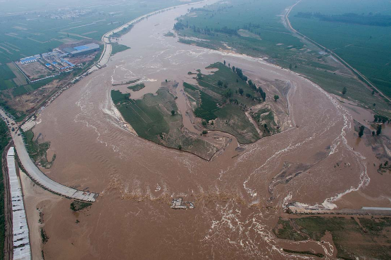 （河北刑台市有农田和道路被水淹没。Stringer/REUTERS 摄）
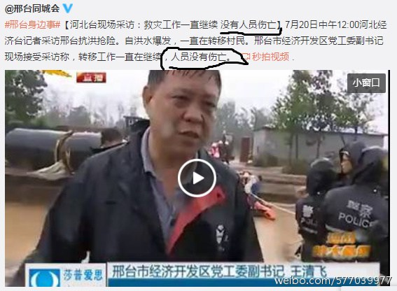
（下面这几张照片是灾后的大贤村）
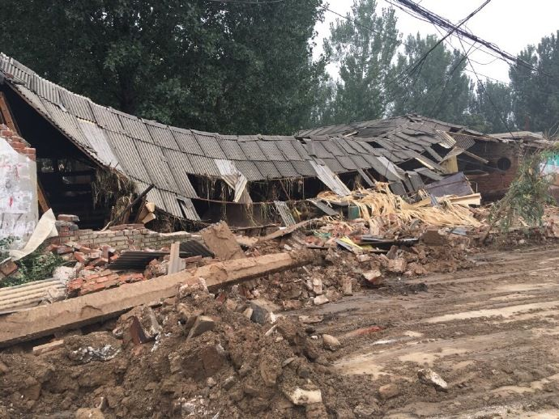 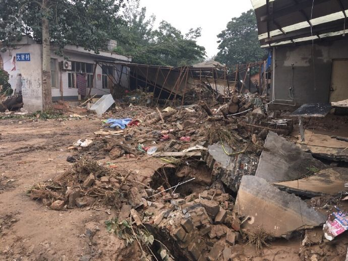 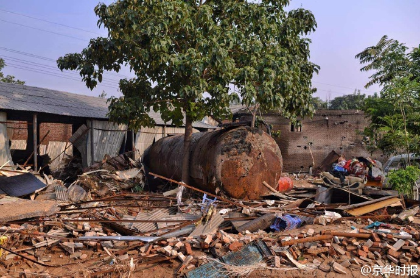 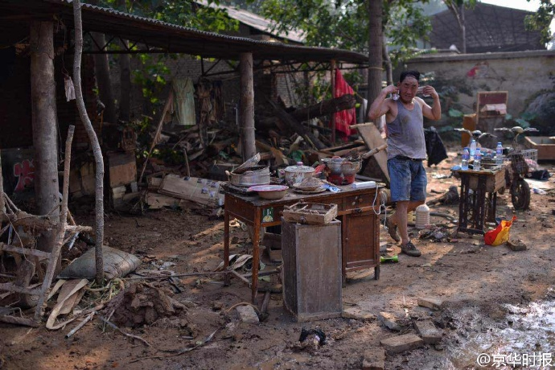 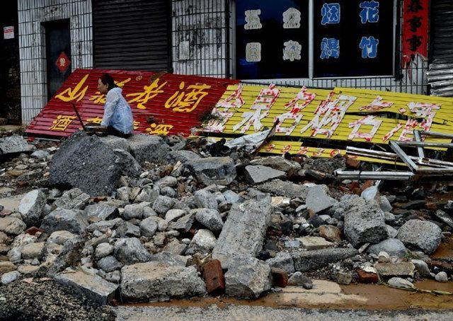 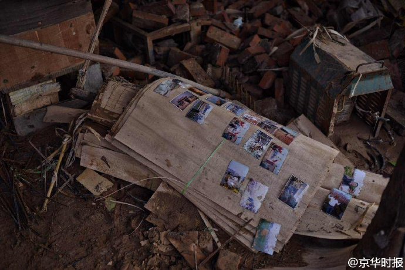 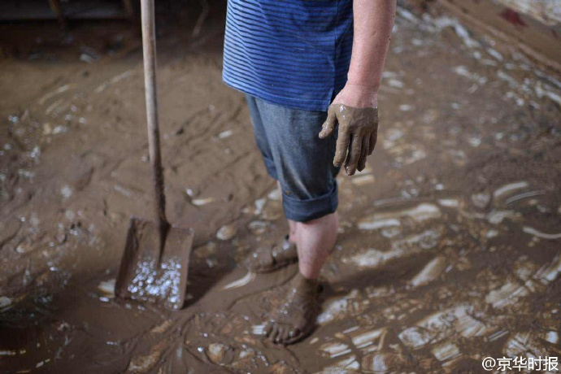 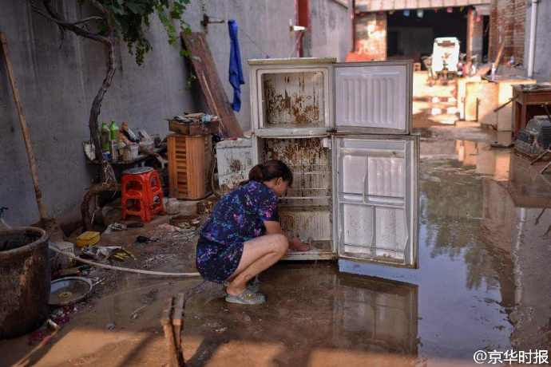 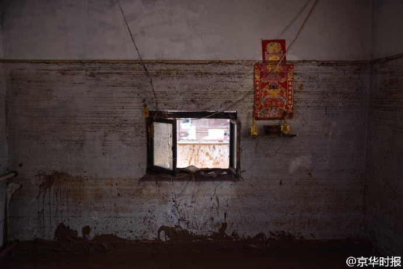 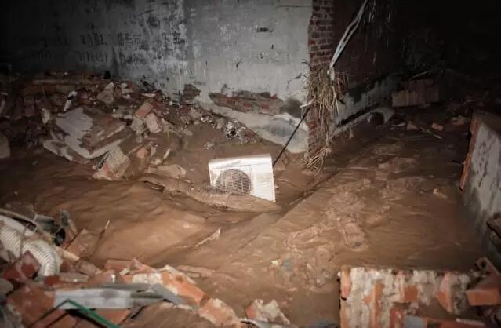 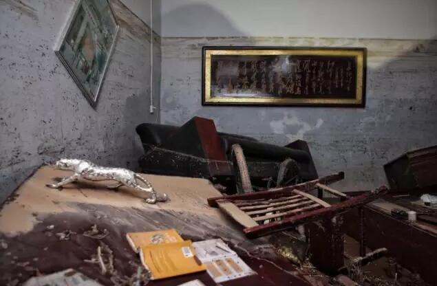
截止到7月24日16时统计，洪灾已造成邢台市34人死亡，13人失踪，受灾人口达167.8万；倒塌房屋逾28,000间，严重损坏房屋逾8,000间，一般损坏房屋约17,000间；农作物受灾面积逾11万公顷，直接经济损失逾10亿元。
（以上引自维基百科）
《邢台洪灾真相调查——天灾下的一连串延误 @ 财新网》
《精读党报：邢台大贤村的人祸》
（此文原发于微信，已经被和谐。上述链接是“中国数字时代”的镜像）
《邢台经济开发区水务局局长称：没有接到上级防汛办撤离群众的通知 @ 财经网》
《邢台洪灾——防汛部门曾两次督促施工单位清障河道 但被忽视 @ 财经网》
《決堤？洩洪？邢台水難背後的災情與輿情 @ 端傳媒》
《凤凰评论：邢台悲剧，掩盖人祸的企图不可饶恕 》
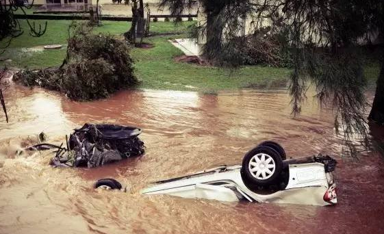
《邢台洪灾，官方说法何以拖在传播链末端？ @ 财经网》
《独孤寻欢：爱国贼，邢台喊你来保卫》
《白非：昏官甚于洪水 民命轻于鸿毛 博谈网》
《河北发布“抗洪救灾最美人物” 遭网民集体炮轰 @ 自由亚洲电台》
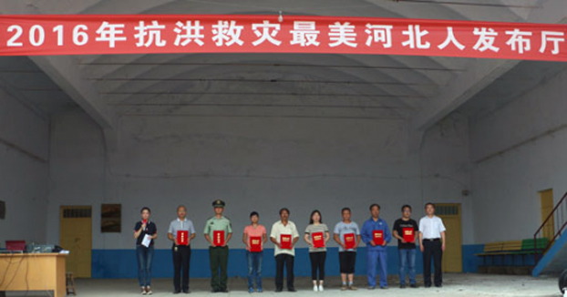
【官方回应开发区官员与灾民互跪：部分死者家属情绪激动】
22日下午，邢台市经济技术开发区相关部门负责人证实该区党工委副书记与受灾村民互跪视频的真实性。该负责人介绍，22日上午十点半左右，邢台市经济技术开发区东旺镇和王快镇因受洪涝灾害影响的部分村民及死者家属情绪激动，堵塞在107国道邢临路口，正赶上区党工委副书记王清飞去附近指挥救灾工作，村民情绪激动，就出现了网上视频中互跪的一幕。
王清飞周三（7月20日）接受媒体访问时，曾指水灾“人员没有伤亡”，令村民极度愤怒。
【邢台水库泄洪的通知】
微博@牛城晚报 和@邢台生活 分别与7月19日22:29分、22:43分_发布消息：“预计7月20日凌晨3时，朱庄水库、临城水库开始泄洪！”
【石家庄一水库凌晨提前泄洪 2点泄洪0点发通知】
石家庄灵寿县横山岭水库7月25日凌晨2：00提前泄洪，官方24日23时59分发布紧急转移通知。县防汛办工作人员称，2点泄洪的通知为预计通知，正式发文通知为25日凌晨1点起加大水流量。群众反映紧急转移通知发布太迟，工作人员证实，他接到市防汛办的通知为24日11时许，看到县广播电视台播发紧急转移通知的时间为25日零时许。
【井陉和武安的灾情更重】
民间减灾组织负责人告诉记者，相比邢台，石家庄市井陉县和邯郸市武安市的整体灾情更严重，武安市的马家庄乡是重灾区中心之一。目前，马家庄乡多数地区的网络和电路依然处于中断状态，记者进入马家庄乡张新庄村后电话亦无法拨通。据当地人描述，桥冲垮、路冲断，一些村庄犹如孤岛。“整个太行山南段东麓受灾面积非常大。”
【邢台经济开发区水务局局长称：没有接到上级防汛办撤离群众的通知】
局长郑建平对记者透露，19号晚上到20号凌晨，开发区没有接到上级防汛办要求七里河下游群众撤离的通知。然而开发区的上级防汛部门——邢台市防汛抗旱指挥部办公室，市防汛办副指挥长、水务局局长焦立君又告诉记者，市防汛办当时确实向经济开发区发了群众撤离通知，但记不清是几点发的。
【邢台水务工程师：都知道大贤村有隐患 没钱用啥治?】
七里河到大贤村段的河道突然变窄，这一长期存在的安全隐患，在19点凌晨一触即发，七里河水漫溢冲进大贤村。面临这样的安全隐患为什么没有治理？邢台市水务局总工程师马兆勋说，没钱：“你把河道掘开，不得需要钱吗？没有人给钱，用啥治？都知道那是隐患，只能说上面来水，及时通知老百姓转移。”
【邢台七里河行洪工程十年耗资数十亿】
引发大贤村悲剧的七里河，曾在过去十年间投入数十亿“开发建设”，且计划投入70多亿元。据2007年邢台日报相关报道，当年，“邢台路桥建设总公司又投资5.3亿元，完成了河道疏浚开挖，确保了安全度汛。”市领导为此在中秋时与工程相关负责人举行茶话会，认为已经“初战告捷”。彼时，工程已累计完成投资10.8亿元。
五岳散人：
知道为啥我懒得评论河北洪灾？在中国，80%的天灾背后是人祸、或者是人祸加剧了天灾的烈度与损失。比如这事儿，当地政府在几乎每个环节都出了问题，而老百姓把房子都盖到水道里面去了，难道不是问题？所以，如何降低天灾的损失只有一个方法，那就是减少人祸与蠢货。
mihoo桑：
【南海是中国的，邢台呢？】
那些南海疯狂转贴的爱国贼呢？怎么一个都不见了。南海是你们的，钓鱼岛是你们的，台湾是你们的，河北邢台就不是你们的了？就这样麻木，懦弱的爱国贼，不过是被野心家煽动起來的疯狗。你们骂美国日本菲律宾世界各国，围堵肯德基，刷叙利亚小男孩，以示你们的善良、正直、勇敢、爱国，唯独对身边同胞的苦难视而不见，这就是你们所谓的“正能量”？！——愚蠢、麻木、怯懦、自私。
---好了到我了转帖结束---
其实什么钓鱼岛，台湾，南海，只不过是党国让屁民高潮的G点罢了，党国要真是寸土不让，海参崴，外兴安岭，黑瞎子岛，长白山什么的怎么算？还有南沙纳土纳群岛。
其实我觉得更让人悲伤的是那些被这种嚣张的民族主义利用的人，其中不乏很多高学历的人，尤其是当我尝试让他们接受到新的资料的时候：他们会立刻避开我所提供的资料信息，不指望他们能变成这里的忠实读者，但至少也别“选择性遗忘”啊，至少也学会分析思考啊...
奤髻：
邢台这么大的灾难还在掩盖吗？那些南海疯狂转贴的爱国贼呢？怎么一个都不见了。
南海是你们的，钓鱼岛是你们的，台湾是你们的，河北邢台就不是你们的？
就这样麻木，懦弱的爱国贼，不过是被野心家煽动起来的疯狗。
余耕归来：
为了遥远南海岛礁的主权，你们义愤填膺誓死捍卫；
而近在咫尺的邢台，爱国贼们却夹紧嘴巴惜字如金。
余耕归来：
就邢台事件来看，就政府责任心而言，中国真的不应该建造核电站，更不应该建造三峡大坝。
旷古丑闻，千古奇冤，全体媒体哑火，全体爱国贼缄默，只剩下微博删帖删帖再删帖。
这样的国，只有领导没有公民。这样的国，让傻逼们去爱吧 http://t.cn/R2dbA3v
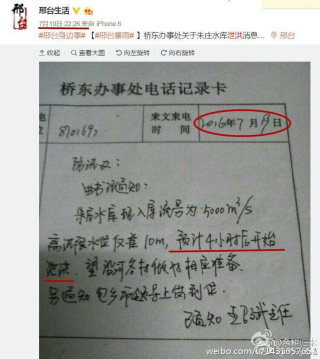
神转评：
这是@smz年少轻狂 他的家乡河北省邯郸永年县，家里房屋被淹，粮食地被冲毁，路上还有尸体飘着无人认领，乡亲们有家不能回，领导们为了头顶上的乌沙帽，不让往上报，对有怨言的乡亲们打的打，抓的抓，所有拍照的全部抓走。
北京厨子新号：
你所看到的尸体
小仙子冰：
谁说物资饱和，谁说不严重。不到现场，你不知道发生了什么。
一位村民说：没人告诉我们撤离， 死了好些人，你们可以播吗？你们会播吗？我没有说话……
一位工作人员说：至今没有一位医生，有药，可是不知道怎么用。
村口一位老人还在哭……
路面还可能塌方，还有第二轮泄洪。
第一次有人告诉我本土大V，说话要负责。
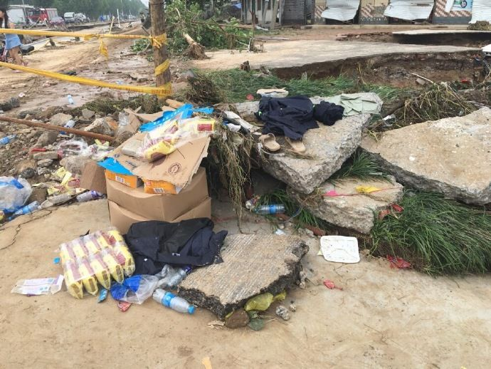 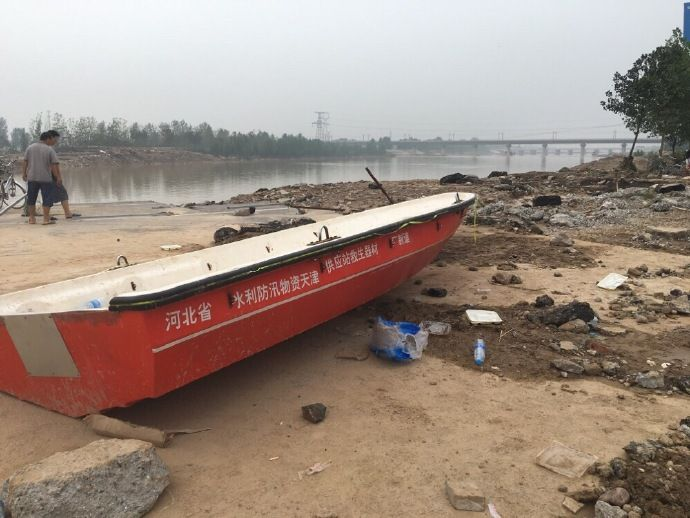
余戈-腾冲之围：
邢台发布的情况不出大家所讨论的，不存在泄洪不通知的问题。
但其实大家现在关心的是，大贤桥怎么就那么窄？老河床上那片房咋回事？另外，对这次水势预判，当地水利部门不如局外非专业人士吗？
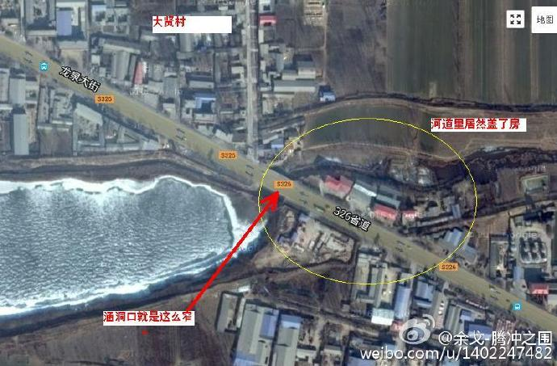
邢台同城会：
#邢台身边事# 【合理表达诉求 堵路是违法行为】洪水之后大贤村村民认为官方没有及时对外通报受灾情况，一度到107国道堵路，现在事态发展到了更严重的地步，部分村民上了高速，警方前往疏导，有肢体接触。现场气氛紧张。呼吁各方应保持理智，及时公布救灾安置情况，及时通报，妥善安置群众！
艾中华：
刑台市警方為阻止因災死亡的村民家屬上訪，雙方發生衝突。 @ Youtube
看得见的历史：
每一次丧事都能办成喜事，这个本事不能不服。
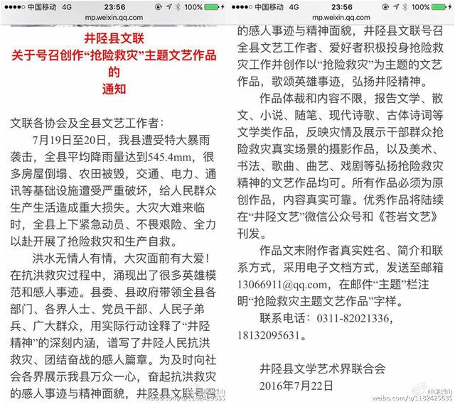
猫财经：
【石家庄一水库凌晨提前泄洪 2点泄洪0点发通知】
石家庄灵寿县横山岭水库25日凌晨提前泄洪，官方深夜发布紧急转移通知。相关工作人员证实，接到市防汛办的通知为24日23时许。彼时，距7月25日1时泄洪时间仅剩1个小时。他看到灵寿县广播电视台播发紧急转移通知的时间为7月25日零时许。而此前，县里一直在要求群众进行紧急撤离，但并无准确的水库泄洪时间。（澎湃）
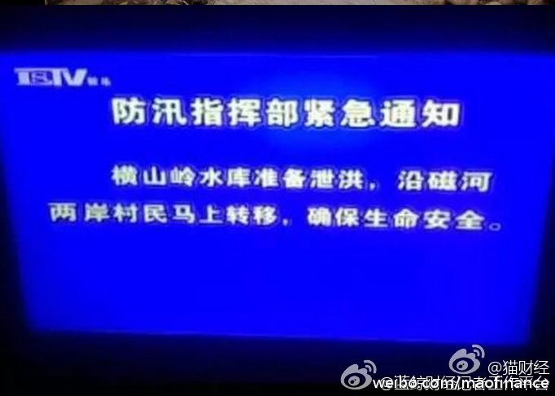
网易上的讽刺性跟贴
《武汉内涝频发 近90亿防汛经费为何用不出去 @ 财新网》
《武汉新洲溃堤伤口上 竟有贪官撒过盐 @ 搜狐》
《武汉溃堤牵贪腐窝案 河堤王掌权12年受贿559万 @ 搜狐》
《武汉渍水围城背后的填湖史 @ 新京报》
【雨后7天积水未褪尽 武汉一小区被封闭】
7月12日，暴雨过后第七天，武汉南湖雅园内渍水依然很深，小区内平均水深50至70厘米，最深处达1.5米，百余台汽车泡在水里。因大量积水未抽排，加上未来几日降雨，小区已经不具备基本生活条件。防汛指挥部要求全体居民撤离，小区进行封闭。
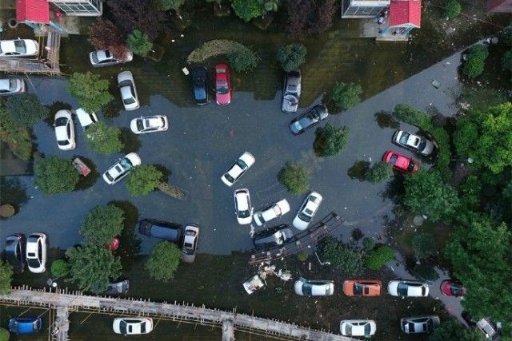 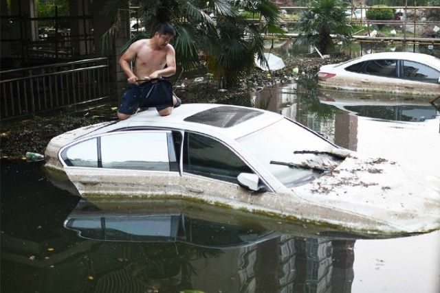 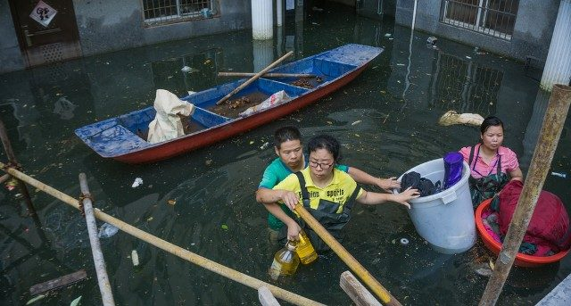
三联生活周刊：
【湖北一体育场被暴雨灌满成泳池】
7月2日早上，鄂州市的标志建筑明堂体育场在大雨中成了浴盆，这是体育场建成30多年从来没有过的。（图片据网友）
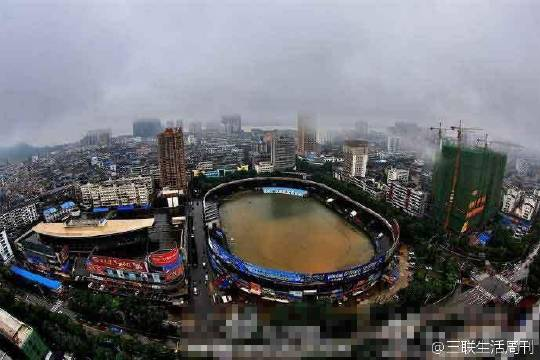
超先声：
武汉被淹，除了大雨之外，都说跟湖泊被填有关。这个我有发言权，我曾经去调查过某大公司占东湖建房子的事，武汉被称为千湖，但实际上很多都已经被填得不成样子，东湖是武汉最大的湖，也最受关注，所以一般不敢填东湖，但实际上悄悄填东湖一直在进行中。而且这个调查很简单，不需要专业知识，用Google earth看一看历年来的地图，就知道哪块被填了。可惜当时报道被和谐了。
琢磨先生：
归纳起来三点原因：1）位置不好。2）台风不停。3）前任不行。
其实很简单，要反思两个问题：1）近130个亿花哪里去了，出个明细。2）接下来怎么办？
尹色色：
武汉今天不妙～有些公交地铁停运，公司调休……
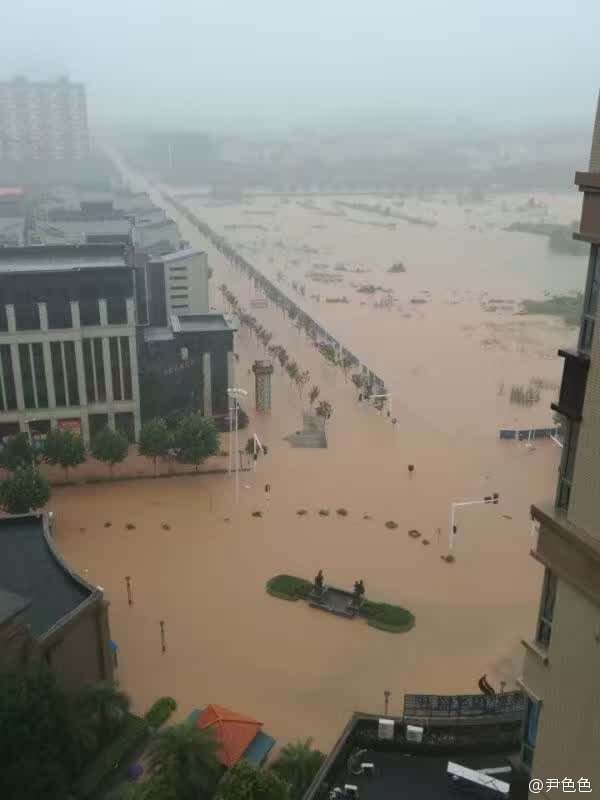 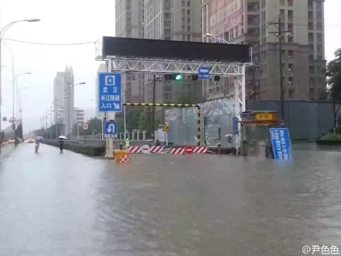 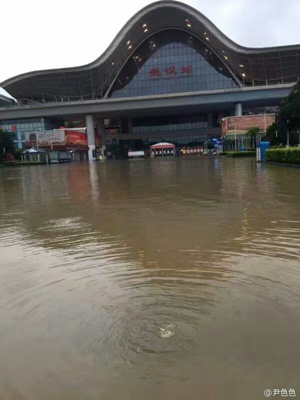 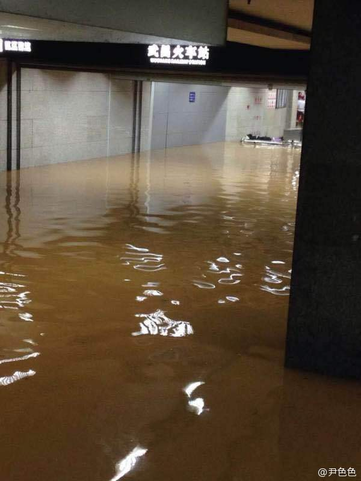 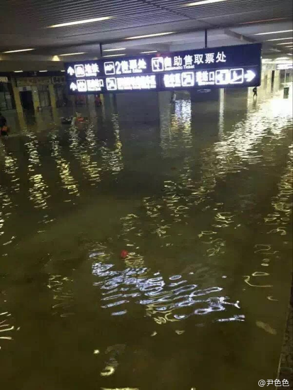 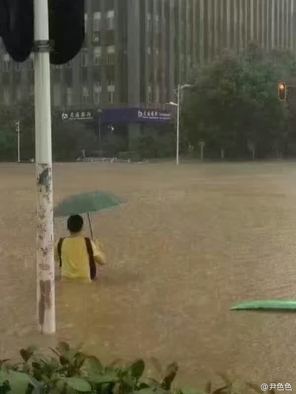
云梦寒冰：
筑堤，我们取得了胜利；炸堤，我们也取得了胜利！我们从一个胜利走向又一个胜利！
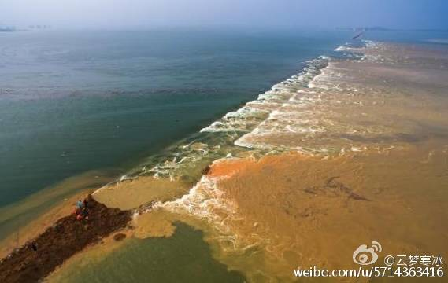
927事事关心：
#湖北暴雨# 武汉光谷……
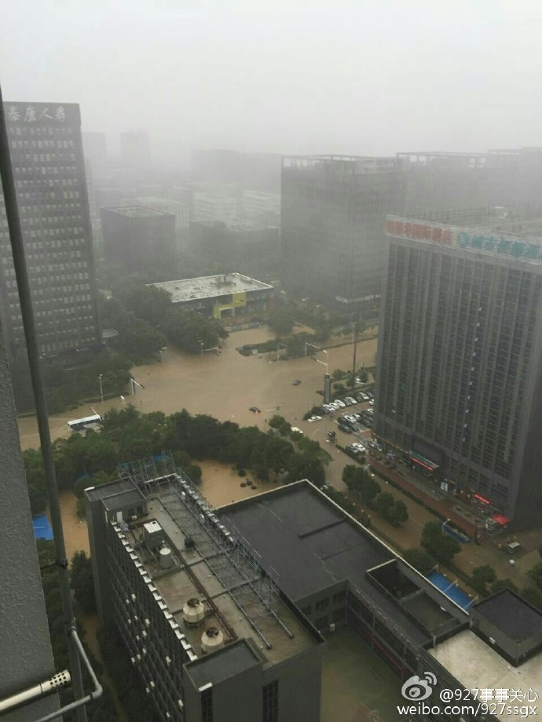 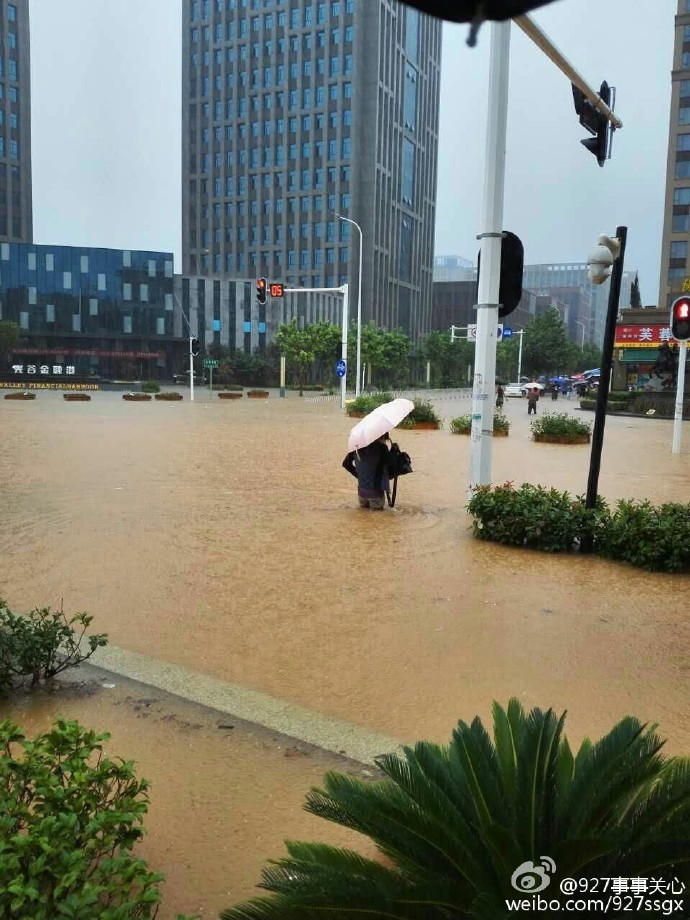
nickel拟科：
你们知道武汉淹成啥样了嘛……
这个外卖很可以。
时光火焰：
时间暴露了多少谎言，改变了多少距离，看清了多少人心。
不得不承认，时间是一种解药，也是一种毒药，人与人之间，不要拿你的聪明利用别人的善良，时间会告诉我们，简单的相处最长远，平凡中的陪伴最心安。
有一天你会明白，善良比聪明更难，聪明是一种天赋，而善良是一种选择，忘记失去的，感激拥有的。。。
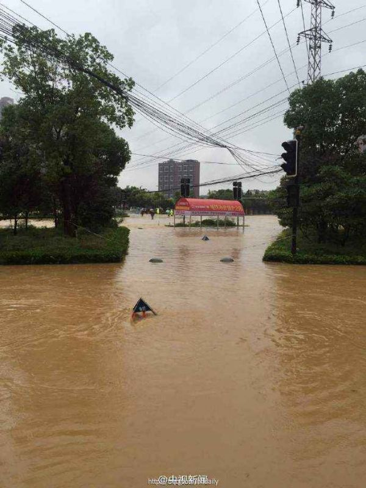
萝卜君de兔子妹：
谁也没想到台风“尼泊特”重创了永泰，高速不能走，国道塌方，救援都进不来了… 我从小到大的地方，从来没看到如此严重的场面，我熟悉的街道，学校，我的家人，亲戚朋友们… 永泰挺住！！平安！！
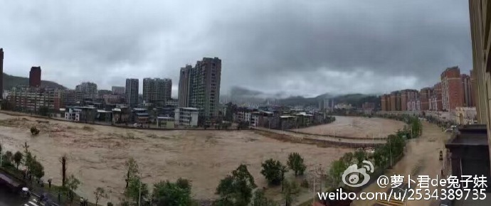 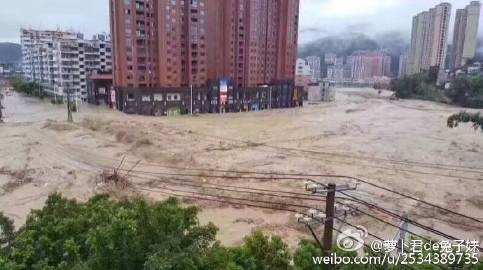 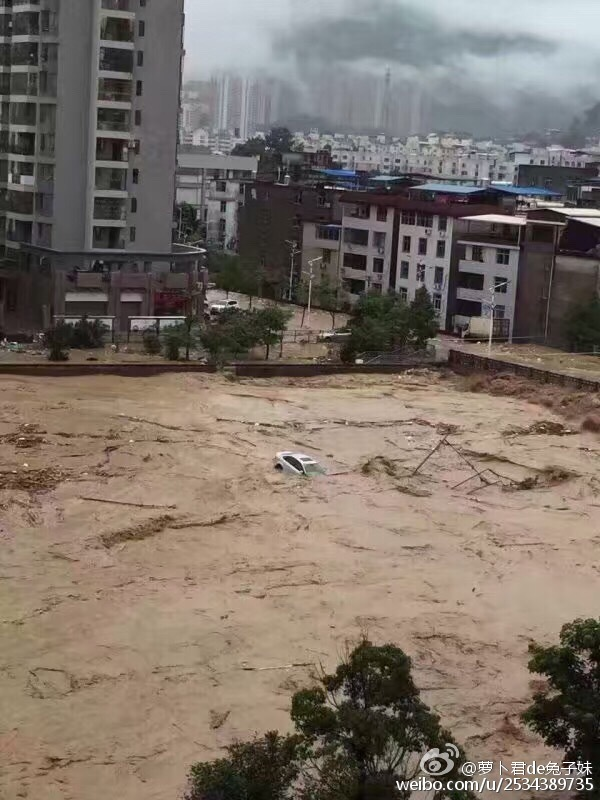 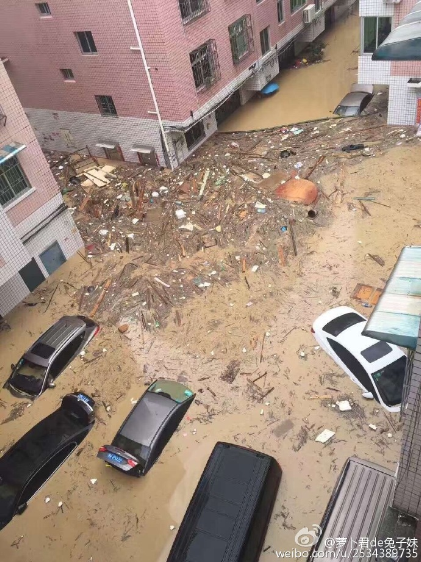 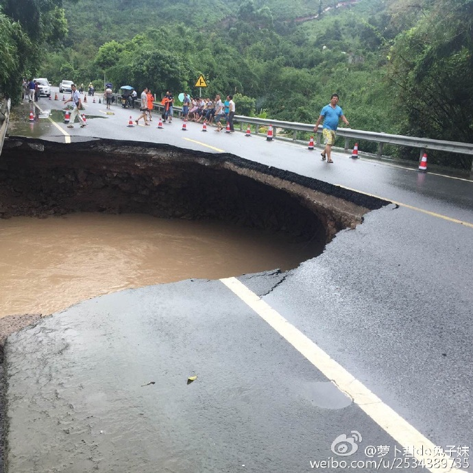
云笙姑娘_：
闽清坂东镇水漫金山了[泪][泪]外公家里都进水了，快沦陷了！！！！[泪][泪]家里都是老人小孩啊！怎么办！！
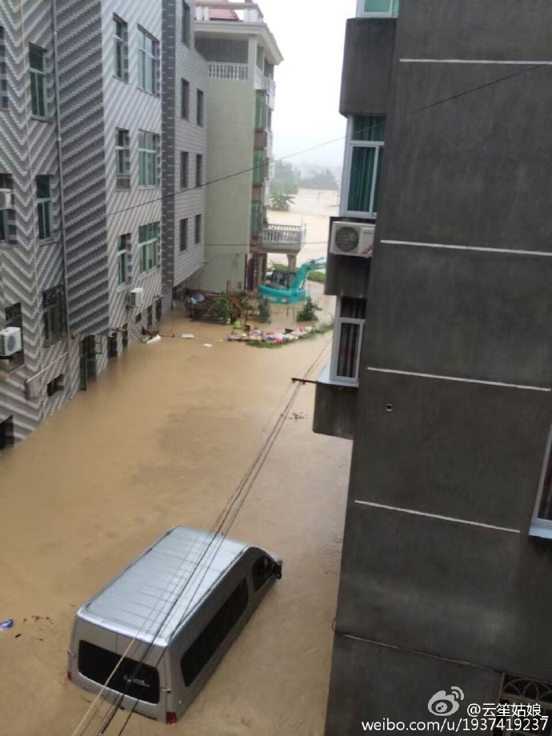 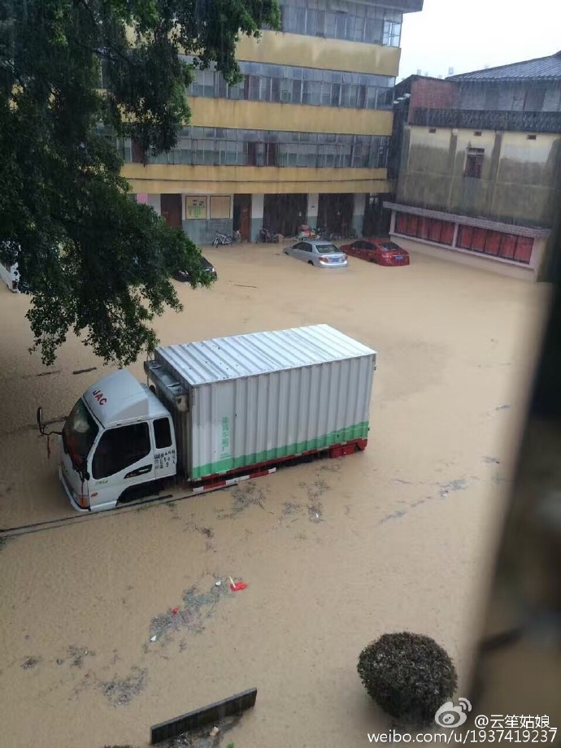 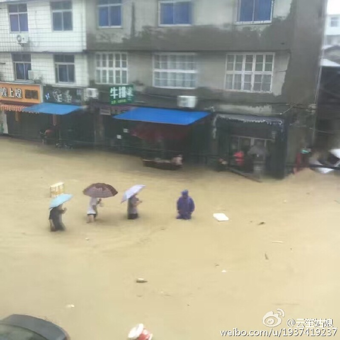
《贵州大方发生山体滑坡致29人被埋 目前已救出6人 @ 中国新闻网》
【河南新乡遭特大暴雨 雨量突破当地历史极值】
9日凌晨3点左右，河南新乡出现大暴雨。据悉此次雨量已经突破当地历史极值。新乡目前多路段积水严重，许多路面都有过膝深的积水，部分地区雨水已经没过了小轿车车顶。气象部门预测，9日降雨将持续，10日逐渐结束。
@周峰Sky：
#尼伯特台风##新乡特大暴雨#记忆中的第一次这么大雨，新乡，望安好！
《暴雨猛浇江西21县 鄱湖水位超警戒 @ 中国新闻网》
刘二狗捣蛋：
抓壮丁啰！
【南京一夜暴雨 大水围城地铁站灌水】
一夜暴雨影响，今早南京多处道路积水严重，车辆无法通行，匝道下不了高速，有些地方积水近一米。南京交警八大队被淹，不少交警开私家车、着便装执勤巡逻。地铁三号线、一号线部分站点、轨道进水，列车间隔将较大。河西奥体区域的黄山路、嵩山路、奥体大街等全部被淹。翠屏东南也被淹，绕城公路也封闭了。
【南京理工被水淹成绿野仙踪】
六朝古都金陵：
机场线地铁司机游泳上班，使命召唤
《西安暴雨部分地铁站雨水倒灌 多处路段积水严重 @ 新浪》

《华北暴雨 北京一日两次拉响橙色预警 @ 德国之声》
《北京暴雨堪比四年前“7·21” @ 中国网》
《北京暴雨多处水淹 公众狠批城市规划 @ 法广》
《七问北京暴雨：积水点改造后怎么还积水？ @ 新浪》
《北京暴雨故宫却安然无恙：古代排水好过现代？ @ 文学城》
俺博客上，和本文相关的帖子（需翻墙）：
对政府——多些“监督问责”，少些“煽情感动”
每周转载：汇总北京7-21暴雨的照片和评论
谈谈环保问题的根源和解决之道
每周转载：上海金山区反 PX 环保抗议活动（大量图片）
每周转载：广东茂名反 PX 环保抗议活动（照片及网友评论）
每周转载：关于毒大米和土壤污染
每周转载：关于宁波镇海的环保抗议（评论若干，照片多张）
每周转载：关于启东的环保抗议（照片多张、视频若干）
会叫的孩子有奶吃——启东人民在行动，上海人民怎么办？
每周转载：关于什邡的环保抗议（网文3篇、照片若干、视频若干）
这次水灾影响的面很广，俺时间/精力有限，只汇总了某些省份的报道。
提醒一下：面对自然灾害的时候，要记得俺曾经强调的：对政府——多些“监督问责”，少些“煽情感动”。
★河北邢台
◇相关照片
（下面这几张照片是灾后的大贤村）
◇相关报道
截止到7月24日16时统计，洪灾已造成邢台市34人死亡，13人失踪，受灾人口达167.8万；倒塌房屋逾28,000间，严重损坏房屋逾8,000间，一般损坏房屋约17,000间；农作物受灾面积逾11万公顷，直接经济损失逾10亿元。
（以上引自维基百科）
《邢台洪灾真相调查——天灾下的一连串延误 @ 财新网》
根据多位村民叙述和财新记者现场走访，这场洪水确非上游水库泄洪造成，大贤村距离水库至少有三十公里，中间有多处乡镇。之所以大贤村损失最重，是因为洪水沿七里河至大贤村时，河道大幅度变窄，河两岸部分堤坝被铲，大量渣土填入河道，河道上横亘着一段围堰，大贤桥涵洞更是被铺设热力管线倾倒的渣土严重堵塞，洪水“憋”在大贤桥西侧，迅猛漫过河岸，向北扫过的大贤村9人死亡或失踪，全村大片房屋、农作物被毁；七里河南岸的南市屯村，亦有两人死亡，东市村也房屋田地损坏严重。
撤离命令
“这么大的水我之前没有接到任何通知，之前1996年发大水的时候村里还挨家挨户通知了。”上述武姓大贤村村民称。当地村民告诉财新记者，他们或者没有得到村干部通知，或者得到通知时已经凌晨两点左右，“水都淹到腰了”。
虽然事后官方澄清并不存在人为泄洪，但通知群众疏散过晚，一直是当地村民感到愤怒的问题。
三不管的河段
邢台地势西高东低，主要河流21条，分属子牙河、黑龙港河和大运河三大水系。七里河-顺水河是子牙河水系的支流，穿过邢台南郊，是邢台市行洪的主要干道。
东汪镇大贤村位于七里河-顺水河的北岸。省道326通过大贤桥过河，桥西称七里河，桥东为顺水河，发源于邢台县马河乡一带山区，至任县环水村南老河头与南澧河汇入北澧新河。
从地图上可以直观地看到，大贤桥宛如一个口袋的束口，上游是口袋的大肚子，七里河在这里迅速变窄。隐患显而易见，为什么无人治理？
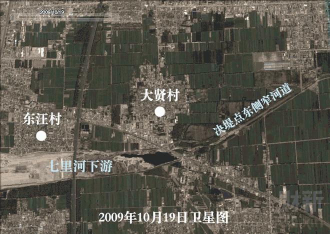
《精读党报：邢台大贤村的人祸》
（此文原发于微信，已经被和谐。上述链接是“中国数字时代”的镜像）
我们看看邢台市水利专家张英林的说法，他介绍说，袭击大贤村的洪水有两路，一路来自东川口水库，这个小水库距离大贤村40公里，是开敞式水库，泄洪不能控制，库容满了就会往外流。
7月20日凌晨2时，东川口水库满了——入库382立方米/秒，出库382立方米/秒，洪水沿着七里河滚滚向下，在途中，又汇合了多条小河沟，等到邢台市区西边的邢左公路大桥时，流量已经在500立方米/秒以上。在玉带桥，又承接了邢台市西部南石门流域的洪水，两路汇合达到580立方米/秒，形成了大洪水。
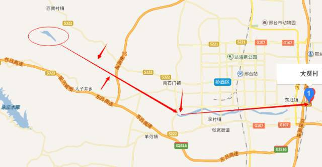
要命的是，流经大贤村时，河道迅速收窄，正常通过能力只有40立方米/秒，于是洪水漫过河堤决口，包括大贤村在内的12个村进水。
七里河在邢台市区，10年前进行过治理改造，引朱庄水库的水，建成了七里河景观带，其中就包括加宽河道，当地媒体曾用“壮阔”形容水面。但出了邢台市区，在大贤村马上收窄。
根据新京报实地探访，大贤桥下还在修热力管道，部分河道被占。
但问题是，从7月18日开始，邢台市气象局连发4道暴雨预警，7月19日下午2点，升级为红色。
该市防汛抗旱指挥部也预判，7月20日3时，较大的朱庄水库都会达到汛限水位，需要开闸泄洪，难道就没有人注意东川口水库的情况吗？就没有人注意到作为行洪河道的七里河，在大贤桥下突然变窄，是一个明显不过的隐患点吗？
退一万步说，即使朱庄水库泄洪提前了1小时，袭击大贤村的洪水来自朱庄水库，这也不合逻辑——试想如果你是一个下游居民，提前接到通知，夜里3点上游水库泄洪，你会什么时候收拾细软转移？会拖到凌晨2点50吗？凌晨2点你还会在家里睡觉吗？
唯一的解释，没有人提前通知他们转移，更不用说组织转移了。
......
说这么多，基本可以确定：
一，7月19日-20日的暴雨，在邢台市（乃至河北省）造成了极其严重的伤亡，其中包括很多老人和儿童——他们是农村的留守人群，也是弱势群体，应对灾难的能力低下。
二，当地职能部门，无论是灾前防范还是灾后应对，都存在不到位的地方，这种不到位，已经激发了群体性事件。

《邢台经济开发区水务局局长称：没有接到上级防汛办撤离群众的通知 @ 财经网》
《邢台洪灾——防汛部门曾两次督促施工单位清障河道 但被忽视 @ 财经网》
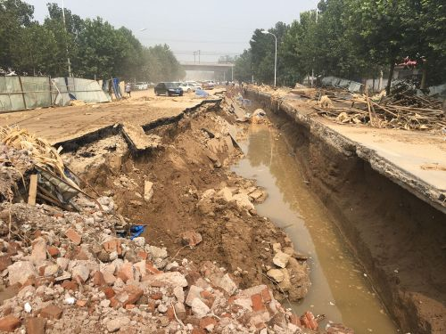 （龙泉大街热力管道施工现场）
实施热力管道项目的是邢台热力公司，其施工方为河北省安装工程有限公司（下称河北安装公司）。
施工单位为了让热力管道穿过七里河，不受雨水的干扰，就用街道挖出来的大量渣土和柏油块，在龙王庙桥前筑起了宽约20米长30多米堤坝，横向拦截了河道。
《财经》记者独家获得的两份《河道清障通知》显示，早在5月13日，邢台经济开发防汛抗旱指挥部办公室（下称邢台开发区防汛指挥部），就向河北安装公司下发了河道清障通知，称“防汛检查中发现你单位施工作业时，在河道范围内倾倒渣土，阻碍行洪，限你单位5月31日前排除障碍物”。
近两个月后，7月7日，邢台开发区防汛指挥部再次向河北安装公司下发清障通知书。与前一次不同的是，这次清障通知指出，施工单位不仅向河道内倾倒渣土，还在七里河内设置了围堰。
根据《防洪法》第22条第2款之规定：禁止在河道、湖泊管理范围内建设妨碍行洪的建筑物、构建物，倾倒垃圾、渣土，从事影响河势稳定、危害河岸堤防安全和其他妨碍河道行洪的活动。
《決堤？洩洪？邢台水難背後的災情與輿情 @ 端傳媒》
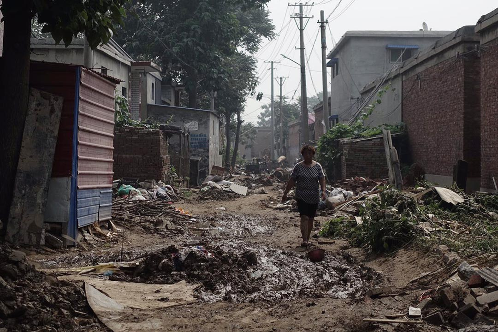 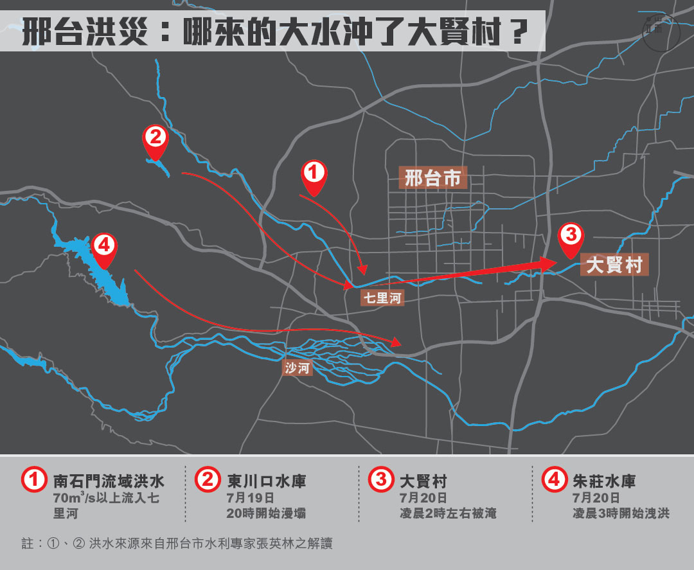
《凤凰评论：邢台悲剧，掩盖人祸的企图不可饶恕 》
《邢台洪灾，官方说法何以拖在传播链末端？ @ 财经网》
纵览这个事件被报道的过程，我们看到，信息的披露和传播路径是这样的：网友爆料——自媒体传播——正规媒体介入——官方说法。
本应第一时间掌握、而且完全更有能力、更有责任通报的官方，却拖在了传播链的末端。
古人云，时无英雄，竖子成名，如今堪称：时无官报，小号刷屏。
已有无数案例告诫过：在信息化高度发达的今天，一地政府，面对灾情也好，其他负面也好，越慢越被动，越捂越难看，越反信息化，责任就越大。
真实的、详实的信息缺位，谣言就会自发填补；客观的、全面的信息缺位，夸张的、编造的信息就会上位。
《独孤寻欢：爱国贼，邢台喊你来保卫》
《白非：昏官甚于洪水 民命轻于鸿毛 博谈网》
《河北发布“抗洪救灾最美人物” 遭网民集体炮轰 @ 自由亚洲电台》
【官方回应开发区官员与灾民互跪：部分死者家属情绪激动】
22日下午，邢台市经济技术开发区相关部门负责人证实该区党工委副书记与受灾村民互跪视频的真实性。该负责人介绍，22日上午十点半左右，邢台市经济技术开发区东旺镇和王快镇因受洪涝灾害影响的部分村民及死者家属情绪激动，堵塞在107国道邢临路口，正赶上区党工委副书记王清飞去附近指挥救灾工作，村民情绪激动，就出现了网上视频中互跪的一幕。
王清飞周三（7月20日）接受媒体访问时，曾指水灾“人员没有伤亡”，令村民极度愤怒。
【邢台水库泄洪的通知】
微博@牛城晚报 和@邢台生活 分别与7月19日22:29分、22:43分_发布消息：“预计7月20日凌晨3时，朱庄水库、临城水库开始泄洪！”
【石家庄一水库凌晨提前泄洪 2点泄洪0点发通知】
石家庄灵寿县横山岭水库7月25日凌晨2：00提前泄洪，官方24日23时59分发布紧急转移通知。县防汛办工作人员称，2点泄洪的通知为预计通知，正式发文通知为25日凌晨1点起加大水流量。群众反映紧急转移通知发布太迟，工作人员证实，他接到市防汛办的通知为24日11时许，看到县广播电视台播发紧急转移通知的时间为25日零时许。
【井陉和武安的灾情更重】
民间减灾组织负责人告诉记者，相比邢台，石家庄市井陉县和邯郸市武安市的整体灾情更严重，武安市的马家庄乡是重灾区中心之一。目前，马家庄乡多数地区的网络和电路依然处于中断状态，记者进入马家庄乡张新庄村后电话亦无法拨通。据当地人描述，桥冲垮、路冲断，一些村庄犹如孤岛。“整个太行山南段东麓受灾面积非常大。”
【邢台经济开发区水务局局长称：没有接到上级防汛办撤离群众的通知】
局长郑建平对记者透露，19号晚上到20号凌晨，开发区没有接到上级防汛办要求七里河下游群众撤离的通知。然而开发区的上级防汛部门——邢台市防汛抗旱指挥部办公室，市防汛办副指挥长、水务局局长焦立君又告诉记者，市防汛办当时确实向经济开发区发了群众撤离通知，但记不清是几点发的。
【邢台水务工程师：都知道大贤村有隐患 没钱用啥治?】
七里河到大贤村段的河道突然变窄，这一长期存在的安全隐患，在19点凌晨一触即发，七里河水漫溢冲进大贤村。面临这样的安全隐患为什么没有治理？邢台市水务局总工程师马兆勋说，没钱：“你把河道掘开，不得需要钱吗？没有人给钱，用啥治？都知道那是隐患，只能说上面来水，及时通知老百姓转移。”
【邢台七里河行洪工程十年耗资数十亿】
引发大贤村悲剧的七里河，曾在过去十年间投入数十亿“开发建设”，且计划投入70多亿元。据2007年邢台日报相关报道，当年，“邢台路桥建设总公司又投资5.3亿元，完成了河道疏浚开挖，确保了安全度汛。”市领导为此在中秋时与工程相关负责人举行茶话会，认为已经“初战告捷”。彼时，工程已累计完成投资10.8亿元。
◇网友评论
五岳散人：
知道为啥我懒得评论河北洪灾？在中国，80%的天灾背后是人祸、或者是人祸加剧了天灾的烈度与损失。比如这事儿，当地政府在几乎每个环节都出了问题，而老百姓把房子都盖到水道里面去了，难道不是问题？所以，如何降低天灾的损失只有一个方法，那就是减少人祸与蠢货。
mihoo桑：
【南海是中国的，邢台呢？】
那些南海疯狂转贴的爱国贼呢？怎么一个都不见了。南海是你们的，钓鱼岛是你们的，台湾是你们的，河北邢台就不是你们的了？就这样麻木，懦弱的爱国贼，不过是被野心家煽动起來的疯狗。你们骂美国日本菲律宾世界各国，围堵肯德基，刷叙利亚小男孩，以示你们的善良、正直、勇敢、爱国，唯独对身边同胞的苦难视而不见，这就是你们所谓的“正能量”？！——愚蠢、麻木、怯懦、自私。
---好了到我了转帖结束---
其实什么钓鱼岛，台湾，南海，只不过是党国让屁民高潮的G点罢了，党国要真是寸土不让，海参崴，外兴安岭，黑瞎子岛，长白山什么的怎么算？还有南沙纳土纳群岛。
其实我觉得更让人悲伤的是那些被这种嚣张的民族主义利用的人，其中不乏很多高学历的人，尤其是当我尝试让他们接受到新的资料的时候：他们会立刻避开我所提供的资料信息，不指望他们能变成这里的忠实读者，但至少也别“选择性遗忘”啊，至少也学会分析思考啊...
奤髻：
邢台这么大的灾难还在掩盖吗？那些南海疯狂转贴的爱国贼呢？怎么一个都不见了。
南海是你们的，钓鱼岛是你们的，台湾是你们的，河北邢台就不是你们的？
就这样麻木，懦弱的爱国贼，不过是被野心家煽动起来的疯狗。
余耕归来：
为了遥远南海岛礁的主权，你们义愤填膺誓死捍卫；
而近在咫尺的邢台，爱国贼们却夹紧嘴巴惜字如金。
余耕归来：
就邢台事件来看，就政府责任心而言，中国真的不应该建造核电站，更不应该建造三峡大坝。
旷古丑闻，千古奇冤，全体媒体哑火，全体爱国贼缄默，只剩下微博删帖删帖再删帖。
这样的国，只有领导没有公民。这样的国，让傻逼们去爱吧 http://t.cn/R2dbA3v
神转评：
这是@smz年少轻狂 他的家乡河北省邯郸永年县，家里房屋被淹，粮食地被冲毁，路上还有尸体飘着无人认领，乡亲们有家不能回，领导们为了头顶上的乌沙帽，不让往上报，对有怨言的乡亲们打的打，抓的抓，所有拍照的全部抓走。
北京厨子新号：
你所看到的尸体
小仙子冰：
谁说物资饱和，谁说不严重。不到现场，你不知道发生了什么。
一位村民说：没人告诉我们撤离， 死了好些人，你们可以播吗？你们会播吗？我没有说话……
一位工作人员说：至今没有一位医生，有药，可是不知道怎么用。
村口一位老人还在哭……
路面还可能塌方，还有第二轮泄洪。
第一次有人告诉我本土大V，说话要负责。
余戈-腾冲之围：
邢台发布的情况不出大家所讨论的，不存在泄洪不通知的问题。
但其实大家现在关心的是，大贤桥怎么就那么窄？老河床上那片房咋回事？另外，对这次水势预判，当地水利部门不如局外非专业人士吗？
邢台同城会：
#邢台身边事# 【合理表达诉求 堵路是违法行为】洪水之后大贤村村民认为官方没有及时对外通报受灾情况，一度到107国道堵路，现在事态发展到了更严重的地步，部分村民上了高速，警方前往疏导，有肢体接触。现场气氛紧张。呼吁各方应保持理智，及时公布救灾安置情况，及时通报，妥善安置群众！
艾中华：
刑台市警方為阻止因災死亡的村民家屬上訪，雙方發生衝突。 @ Youtube
看得见的历史：
每一次丧事都能办成喜事，这个本事不能不服。
猫财经：
【石家庄一水库凌晨提前泄洪 2点泄洪0点发通知】
石家庄灵寿县横山岭水库25日凌晨提前泄洪，官方深夜发布紧急转移通知。相关工作人员证实，接到市防汛办的通知为24日23时许。彼时，距7月25日1时泄洪时间仅剩1个小时。他看到灵寿县广播电视台播发紧急转移通知的时间为7月25日零时许。而此前，县里一直在要求群众进行紧急撤离，但并无准确的水库泄洪时间。（澎湃）
网易上的讽刺性跟贴
★湖北武汉
◇相关报道
《武汉内涝频发 近90亿防汛经费为何用不出去 @ 财新网》
湖北汛情持续近两周，据湖北省民政厅最新通报，自6月18日以来，洪涝、风雹等自然灾害，已造成湖北省92个县市区共1781.26万人次受灾，死亡69人。作为湖北省会的武汉亦未幸免，最严重时全城有超过180个处发生积水。
许多公众质疑，武汉市政府当局曾在 2013年承诺，将投资129.85亿元提高城市的排水能力。如今3年已过，武汉的内涝渍水之痛依旧。究竟，当年规划的防洪经费用到哪儿去了？
......
7月8日，财新记者致电武汉市水务局，对方宣传部门工作人员告诉财新记者，等收到申请书后，如果根据规定需要作出相应回复，水务局肯定会按规定执行。
这名武汉市水务局的工作人员还向财新记者表示，当年规划的129.85亿元防汛资金目前只使用了40多亿。
据人民网2015年6月20日报道，武汉市水务局曾称，已完成投资的40亿元，用于建成了罗家路（二期）、常青路（二期）泵站的改造工程等一批骨干排水项目，明显改善了多个地区的排水条件，使武汉城区内20余处老渍水点的情况得到缓解。
那么，剩下的90多亿元为何没有花出去？
《武汉新洲溃堤伤口上 竟有贪官撒过盐 @ 搜狐》
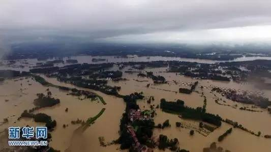 据新华社，7月1日晚，湖北武汉新洲区举水河发生特大洪水，凤凰镇郑园村陶家河湾举水河西圩垸发生溃口，口门70多米，附近6个村庄、1个社区被淹。
溃口发生后，据媒体报道，当地村民和官员称，举水西堤已有20多年没有加固。“从很小的时候就听说了好几次国家财政拨款维修加固堤坝，但是最后也没见着修。”
而和这种“无作为”的局面“相映成趣”的是，2014年，武汉水利堤防中心主任唐某在2005年至2013年间，经其手涉及受贿的工程总造价已经接近10亿元，其中就有举水河举西堤加固工程，工程造价为3186万。
《武汉溃堤牵贪腐窝案 河堤王掌权12年受贿559万 @ 搜狐》
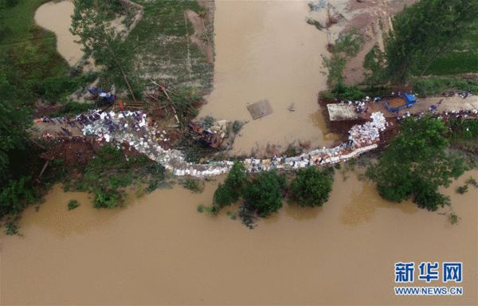 继武汉上周降水达历史之最、多处河堤溃口之后，武汉水利堤防工程建设贪腐窝案浮出水面。武汉水利堤防中心原主任8年间经手受贿工程造价近10亿元，其中包括此次溃口的新洲举水河凤凰西堤加固工程。
搜狐《新闻当事人》发现，曾分管武汉水利堤防建设12年的武汉市水务局原副局长刘东才，多次“空手套白狼”，为儿子和他人承接工程，单笔最高受贿300万元。刘的老下属、武汉市水务局原副巡视员徐木生也因受贿、巨额财产不明落马。
《武汉渍水围城背后的填湖史 @ 新京报》
武汉市被称为“千湖之城”。新京报记者发现，在渍水严重的地区，很多原来都是湖泊、湿地，原本就是承担蓄水、分洪功能的。这些湖被填后建起住宅小区，如今渍水难题困扰着居民。
......
赵世龙曾是武汉一家媒体的负责人，他一直很关注武汉填湖的现象。
赵世龙认为，武汉近几年房地产发展迅速。现在人们喜欢依水而居，武汉的后湖、沙湖、南湖等几个比较大的湖周边，都建满房子。一些房地产商通过填湖，扩大地产开发面积。
全国政协委员、武汉市人大常委、中国地质大学教授李长安曾经研究过武汉湖泊面积变化。李长安对近三十年来的武汉市卫星遥感数据进行了分析，形象地说明武汉湖泊面积不断消失和缩小。
2001年11月30日，武汉市人大常委会通过了《武汉市湖泊保护条例》，将166个湖泊列入保护名录。但这并未浇灭武汉的填湖热情。1987年时武汉的湖泊面积是370.97平方公里，2001年是336.50平方公里，到2013年时，只剩下264.73平方公里。二十多年间，湖泊面积减少近三分之一。
填湖背后是巨大的利益。根据国土资源部官方网站公示，武汉市今年初出让的紧邻沙湖的165号地块，1.5公顷土地出让价格是4.95亿元，相当于每亩土地2200万元。
【雨后7天积水未褪尽 武汉一小区被封闭】
7月12日，暴雨过后第七天，武汉南湖雅园内渍水依然很深，小区内平均水深50至70厘米，最深处达1.5米，百余台汽车泡在水里。因大量积水未抽排，加上未来几日降雨，小区已经不具备基本生活条件。防汛指挥部要求全体居民撤离，小区进行封闭。
◇网友评论
三联生活周刊：
【湖北一体育场被暴雨灌满成泳池】
7月2日早上，鄂州市的标志建筑明堂体育场在大雨中成了浴盆，这是体育场建成30多年从来没有过的。（图片据网友）
超先声：
武汉被淹，除了大雨之外，都说跟湖泊被填有关。这个我有发言权，我曾经去调查过某大公司占东湖建房子的事，武汉被称为千湖，但实际上很多都已经被填得不成样子，东湖是武汉最大的湖，也最受关注，所以一般不敢填东湖，但实际上悄悄填东湖一直在进行中。而且这个调查很简单，不需要专业知识，用Google earth看一看历年来的地图，就知道哪块被填了。可惜当时报道被和谐了。
琢磨先生：
归纳起来三点原因：1）位置不好。2）台风不停。3）前任不行。
其实很简单，要反思两个问题：1）近130个亿花哪里去了，出个明细。2）接下来怎么办？
尹色色：
武汉今天不妙～有些公交地铁停运，公司调休……
云梦寒冰：
筑堤，我们取得了胜利；炸堤，我们也取得了胜利！我们从一个胜利走向又一个胜利！
927事事关心：
#湖北暴雨# 武汉光谷……
nickel拟科：
你们知道武汉淹成啥样了嘛……
这个外卖很可以。
时光火焰：
时间暴露了多少谎言，改变了多少距离，看清了多少人心。
不得不承认，时间是一种解药，也是一种毒药，人与人之间，不要拿你的聪明利用别人的善良，时间会告诉我们，简单的相处最长远，平凡中的陪伴最心安。
有一天你会明白，善良比聪明更难，聪明是一种天赋，而善良是一种选择，忘记失去的，感激拥有的。。。
★福建
◇永泰
萝卜君de兔子妹：
谁也没想到台风“尼泊特”重创了永泰，高速不能走，国道塌方，救援都进不来了… 我从小到大的地方，从来没看到如此严重的场面，我熟悉的街道，学校，我的家人，亲戚朋友们… 永泰挺住！！平安！！
◇闽清
云笙姑娘_：
闽清坂东镇水漫金山了[泪][泪]外公家里都进水了，快沦陷了！！！！[泪][泪]家里都是老人小孩啊！怎么办！！
★贵州
《贵州大方发生山体滑坡致29人被埋 目前已救出6人 @ 中国新闻网》
贵州省大方县政府网站1日通报，1日5时30分左右，受连日强降雨影响，大方县理化乡偏坡村金星组发生一起山体滑坡灾害。经初步核实，导致金星组10户29人被埋。经全力抢救，目前已救出6人送医。
★河南
◇新乡
【河南新乡遭特大暴雨 雨量突破当地历史极值】
9日凌晨3点左右，河南新乡出现大暴雨。据悉此次雨量已经突破当地历史极值。新乡目前多路段积水严重，许多路面都有过膝深的积水，部分地区雨水已经没过了小轿车车顶。气象部门预测，9日降雨将持续，10日逐渐结束。
@周峰Sky：
#尼伯特台风##新乡特大暴雨#记忆中的第一次这么大雨，新乡，望安好！
★江西
《暴雨猛浇江西21县 鄱湖水位超警戒 @ 中国新闻网》
刘二狗捣蛋：
抓壮丁啰！
★江苏南京
【南京一夜暴雨 大水围城地铁站灌水】
一夜暴雨影响，今早南京多处道路积水严重，车辆无法通行，匝道下不了高速，有些地方积水近一米。南京交警八大队被淹，不少交警开私家车、着便装执勤巡逻。地铁三号线、一号线部分站点、轨道进水，列车间隔将较大。河西奥体区域的黄山路、嵩山路、奥体大街等全部被淹。翠屏东南也被淹，绕城公路也封闭了。
【南京理工被水淹成绿野仙踪】
六朝古都金陵：
机场线地铁司机游泳上班，使命召唤
★陕西西安
《西安暴雨部分地铁站雨水倒灌 多处路段积水严重 @ 新浪》
★北京
◇相关报道
《华北暴雨 北京一日两次拉响橙色预警 @ 德国之声》
《北京暴雨堪比四年前“7·21” @ 中国网》
《北京暴雨多处水淹 公众狠批城市规划 @ 法广》
《七问北京暴雨：积水点改造后怎么还积水？ @ 新浪》
《北京暴雨故宫却安然无恙：古代排水好过现代？ @ 文学城》
◇网友分享的照片
俺博客上，和本文相关的帖子（需翻墙）：
对政府——多些“监督问责”，少些“煽情感动”
每周转载：汇总北京7-21暴雨的照片和评论
谈谈环保问题的根源和解决之道
每周转载：上海金山区反 PX 环保抗议活动（大量图片）
每周转载：广东茂名反 PX 环保抗议活动（照片及网友评论）
每周转载：关于毒大米和土壤污染
每周转载：关于宁波镇海的环保抗议（评论若干，照片多张）
每周转载：关于启东的环保抗议（照片多张、视频若干）
会叫的孩子有奶吃——启东人民在行动，上海人民怎么办？
每周转载：关于什邡的环保抗议（网文3篇、照片若干、视频若干）
版权声明
本博客所有的原创文章，作者皆保留版权。转载必须包含本声明，保持本文完整，并以超链接形式注明作者编程随想和本文原始地址：
https://program-think.blogspot.com/2016/07/weekly-share-103.html
本博客所有的原创文章，作者皆保留版权。转载必须包含本声明，保持本文完整，并以超链接形式注明作者编程随想和本文原始地址：
https://program-think.blogspot.com/2016/07/weekly-share-103.html